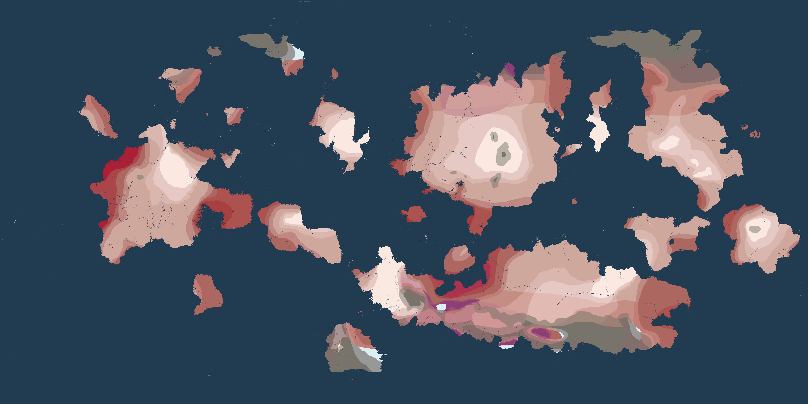
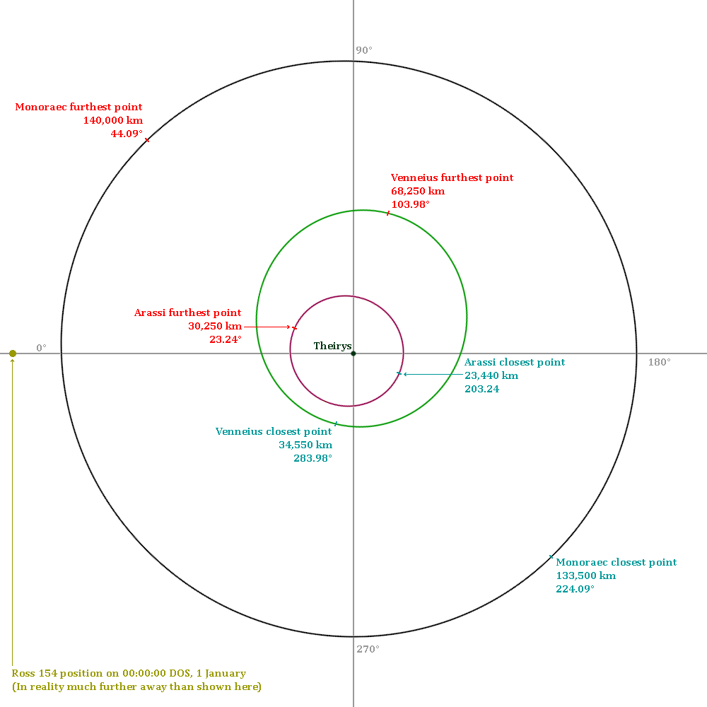
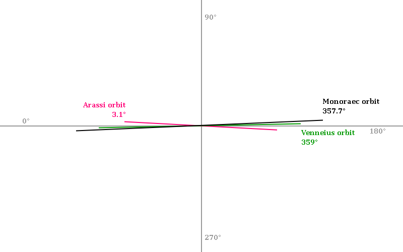

Theirys
|

Equirectangular image of Theirys.
|
|||||||||||||||
{kind=link}
| Population | ? |
| Equatorial circumference | 7536 km (+ 12 km due to equatorial bulge) |
| Semi-major axis | 52,389,025 km |
| Eccentricity | 0.1668 |
| Aphelion | 61,127,515 km |
| Perihelion | 43,650,535 km |
| Albedo | 0.3 |
| Greenhouse effect | 2.663 |
Theirys[p] is an Earth-like planet discovered in 1751, & one of only 2 known celestial objects to harbour life, the other being Earth. Roughly 74.9% of Theirys' surface is covered in ocean, 3.9 percentage-points higher than Earth's 71%[r1][r2]. The rest of Theirys' surface is covered in land, spread out over 5 continents[a1].
Theirys' parent star is Nesque.
Discovery
In 1681,
German
astronomer Heinrich Friedrich decided he wanted to go
space to look for new planets.
After a few years, he managed to create a working
spacecraft, though nobody knows how in the world he succeeded. By
1893, Heinrich had assembled a team of around 15 people, who would all join him in the journey.
Their journey began on
4 July
1696
(24 June in
Old Style).
For the first few days, the journey was going as planned, though they didn't find any planets yet. However, they quickly realised they had no idea where Earth was, so they couldn't head back. They were now stuck on the spacecraft with no way of
communicating with Earth. They did have unlimited
food, likely because they had a somehow-working
mini-farm on the spacecraft. Heinrich was convinced that, someday, they would find a planet.
They kept flying through space for more than 50 years. Around
1741, they noticed they were headed right towards a
star, giving them new hope. Around
1751, they had found what they believed to be a planet, orbiting the star they were headed towards. They managed to steer the spacecraft towards this planet, & were now headed towards the planet. They noticed the planet looked very similiar to Earth, meaning they may have found an Earth-like planet.
The spacecraft officially crash-landed on the surface of the planet at exactly 14:15:30
UTC,
6 June
1759, according to Heinrich, but multiple other team-members stated that they actually landed around 18:20 UTC,
7 June, 1759.
Natural satellites
|
 
Orbits of Theirys' moons.
|
{kind=link}
{kind=link}
Theirys has 3 moons: Arassi, Venneius, & Monoraec. Arassi is closest to Theirys, orbiting at roughly 25,600 km from Theirys. Venneius is second, at around 42,000 km. Monoraec is by-far furthest from Theirys, at around 134,000 km.
Time
1 day on Theirys lasts exactly 69120 seconds. 1 day is 24 hours, 1 hour is 60 minutes, & 1 minute is 48 seconds. 1 Theirys-year is 129 Theirys-days, or 103 Earth-days, 4 hours, & 48 minutes. The theirys date starts at 00:00:00, 1 January, 0. Theirys uses the same months as Earth, but without July & August. Every month has 13 days, except February, which has 12.
| Theirys date | Earth date | Occasion |
|---|---|---|
| 00:00:00 DOS, 1 January 100 | 18:02:39 UTC, 7 September 1787 | Theirys' 2nd century |
| 00:00:00 DOS, 1 January 200 | 18:02:39 UTC, 10 December 1815 | Theirys' 3rd century |
| 00:00:00 DOS, 1 January 300 | 18:02:39 UTC, 12 March 1844 | Theirys' 4th century |
| 00:00:00 DOS, 1 January 400 | 18:02:39 UTC, 13 June 1872 | Theirys' 5th century |
| 00:00:00 DOS, 1 January 500 | 18:02:39 UTC, 15 September 1900 | Theirys' 6th century |
| 00:00:00 DOS, 1 January 600 | 18:02:39 UTC, 17 December 1928 | Theirys' 7th century |
| 00:00:00 DOS, 1 January 700 | 18:02:39 UTC, 20 March 1957 | Theirys' 8th century |
| 10:02:45 DOS, 8 September 743 | 21:17:00 UTC, 20 July 1969 | Moon-landing |
| 13:26:33 DOS, 7 March 745 | 00:00:00 UTC, 1 January 1970 | Unix Epoch |
| 00:00:00 DOS, 1 January 800 | 18:02:39 UTC, 21 June 1985 | Theirys' 9th century |
| 19:26:33 DOS, 3 May 851 | 00:00:00 UTC, 1 January 2000 | Earth's 3rd millennium according to some people |
| 07:26:33 DOS, 9 December 854 | 00:00:00 UTC, 1 January 2001 | Earth's 3rd millennium according to other people |
| 00:00:00 DOS, 1 January 900 | 18:02:39 UTC, 22 September 2013 | Theirys' 10th century |
| 00:00:00 DOS, 1 January 1000 | 18:02:39 UTC, 24 December 2041 | Theirys' 11th century |
I made a Luau script that shows the current time on Theirys:
-- PLEASE NOTE seconds are SUPPOSED to go from 47 to 00 to 01, but instead they go from 47 to 48 to 01 most times in this script.
local daysInYear, hoursInDay, minutesInHour, secondsInMinute = 129, 24, 60, 48
local minutesInDay = minutesInHour * hoursInDay
local secondsInDay = minutesInDay * secondsInMinute
local secondsInYear = secondsInDay * daysInYear
local hoursInYear = hoursInDay * daysInYear
local monthsInYear = 10
local curUnix=os.time()
local DOS_Unix=curUnix
local dat=os.date("!*t",curUnix)
local startUnix=(-6644959041)
local DOS_Offset=0 --from 11 (11h ahead) to -12 (12h behind), 12h ahead does not exist.
local timezones={"CBQ","EBQ","WBS","WLY","WAD","SYA","COI","ELY","FAZ","CAI","MOA","CAZ","DOS","EAZ","CDU","MEL","WLT","WPP","GCU","WFE","EBS","TRS","CWN","MEO",} --abbre. of all timezones, from west to east
curUnix+=(secondsInMinute*minutesInHour*DOS_Offset)
local chosenTimezone=timezones[-(DOS_Offset - 13)]
--local unix=startUnix
local month=0
local dayOfMonth=0
local year=0
local hour, min, sec = 0,0,0
local dayOfWeek=0
local monthName = {"January","February","March","April","May","June","September","October","November","December"}
local earthMonthName ={"January","February","March","April","May","June","July","August","September","October","November","December"}
local daysEveryMonth= { 13, 12, 13, 13, 13, 13, 13, 13, 13, 13}
local daysOfWeek = {"Sunday","Monday","Tuesday","Wednesday","Thursday","Friday","Saturday"} --starts at sunday so that earth date can use this list as well.
local totUnix = curUnix-startUnix
year = (totUnix / secondsInYear)
local months = monthsInYear*year
local days = (totUnix / secondsInDay)
local flr = math.floor
local rnd = math.round
local dayOfYear = 1+(days - flr(daysInYear*flr(year)))
local strngForm = string.format
dayOfWeek = (days + 1) - (flr(days/7)*7)
-- get day of month by subtracting from day of year.
if flr(dayOfYear) <= 13 then
month=1
daySubtract=0
elseif flr(dayOfYear) <= 13+12 then
month=2
daySubtract=13
elseif flr(dayOfYear) <= 13+12+13 then
month=3
daySubtract=13+12
elseif flr(dayOfYear) <= 13+12+13+13 then
month=4
daySubtract=13+12+13
elseif flr(dayOfYear) <= 13+12+13+13+13 then
month=5
daySubtract=13+12+13+13
elseif flr(dayOfYear) <= 13+12+13+13+13+13 then
month=6
daySubtract=13+12+13+13+13
elseif flr(dayOfYear) <= 13+12+13+13+13+13+13 then
month=7
daySubtract=13+12+13+13+13+13
elseif flr(dayOfYear) <= 13+12+13+13+13+13+13+13 then
month=8
daySubtract=13+12+13+13+13+13+13
elseif flr(dayOfYear) <= 13+12+13+13+13+13+13+13+13 then
month=9
daySubtract=13+12+13+13+13+13+13+13
elseif flr(dayOfYear) <= 13+12+13+13+13+13+13+13+13+13 then
month=10
daySubtract=13+12+13+13+13+13+13+13+13
end
dayOfMonth = dayOfYear - daySubtract
hour = (dayOfMonth - flr(dayOfMonth)) * hoursInDay
min = (hour - flr(hour)) * minutesInHour
sec = ((min - flr(min)) * secondsInMinute)
local timStrng="%s • %s:%s:%s %s, %s, %s/%s/%s (%s %s)"
local timStrng2="%s • %s:%s:%s UTC, %s, %s/%s/%s (%s %s)"
print("Theirys:", strngForm(timStrng:: any, curUnix, strngForm("%02d",flr(hour)), strngForm("%02d", flr(min)), strngForm("%02d",rnd(sec)), chosenTimezone, daysOfWeek[flr(dayOfWeek)], flr(year), strngForm("%02d",flr(month)), strngForm("%02d", flr(dayOfMonth)), flr(dayOfMonth), monthName[flr(month)]))
print("Earth:", strngForm(timStrng2:: any, curUnix, strngForm("%02d",dat.hour), strngForm("%02d",dat.min), strngForm("%02d",dat.sec), daysOfWeek[dat.wday], tonumber(dat.year), strngForm("%02d",dat.month), strngForm("%02d",dat.day), tonumber(dat.day), earthMonthName[dat.month]))Etymology
The word "Theirys" is either completely arbitrary, or its etymology is not known. Some people theorize that the word is based on Terra, but there are no sources that back this up.
Biology
Plants
Theirys is very similiar to Earth, in that there are trees, plants, grass, sand, etc. Most of Theirys' land is covered in grass and/or plants. There are only 2 deserts on Theirys; the Lappossa Desert, & the Urruollaa Desert. The former is hotter & larger, while the latter is much drier.
Seasons
On Earth, seasons occur due to Earth's obliquity of 23.5°, meaning the sun can be directly overhead up to 23.5° poleward of the equator. On Theirys, seasons occur due to Theirys' eccentric orbit around its star. Theirys does have obliquity of 5.7°, which makes the northern hemisphere reach peak temperature in June while the southern hemisphere reaches peak temperatures in September or October.
| Hemisphere | January | February | March | April | May | June | September | October | November | December |
|---|---|---|---|---|---|---|---|---|---|---|
| Northern | Winter | Winter | Spring | Spring | Summer | Summer | Summer | Autumn | Autumn | Winter |
| Southern | Winter | Winter | Winter | Spring | Spring | Summer | Summer | Summer | Autumn | Autumn |
See also
Mentioned [a#]
Related
Sources [r#]
- a https://www.usgs.gov/water-science-school/science/how-much-water-there-earth - How Much Water is There on Earth?
- a https://www.usbr.gov/mp/arwec/water-facts-ww-water-sup.html - Water Facts